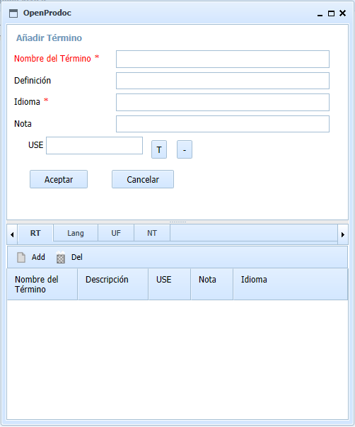
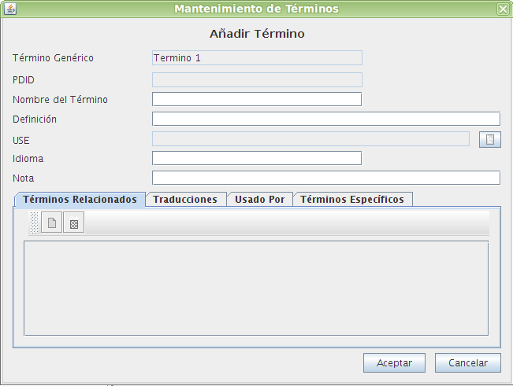
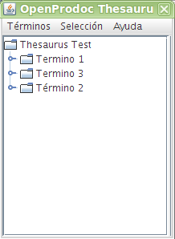

Este formulario permite añadir un término introduciendo todos sus datos. Se generará automaticamente un identificador único (PDID)
Debe introducirse la información siguiente:


Para establecer relaciones de tipo USE, RT o traducciones, aparecerá una ventana que permite seleccionar el término deseado. La forma es diferente en el cliente Swing y en el Web
En el cliente Swing aparecerá una ventana emergente similar a la ventana principal de tesauro, que permitirá elegir el término deseado. Al finalizar, debe elegirse la opción "Selección->Seleccionar Término". Esta ventana permite mostrar información adicional del término a elegir por medio de "Selección->Mostrar Detalles". Puede asimismo mostrarse los terminos relacionados y dependientes por medio de la opción "Selección->Mostrar Hijos". Antes debe elegirse siempre un término

En el cliente Web, al pulsar el botón [T] aparecerá una ventana emergente similar a la ventana principal de tesauro, que permitirá elegir el término deseado y ver sus detalle. Al finalizar, debe elegirse la opción "Selección". Puede eliminarse la selección pulsando el botón [-]
En caso de producirse un error, la operación se cancela y se comunicará al usuario el motivo del error.